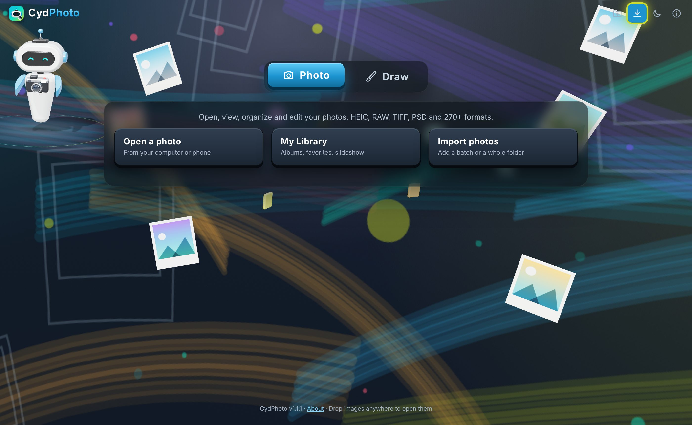
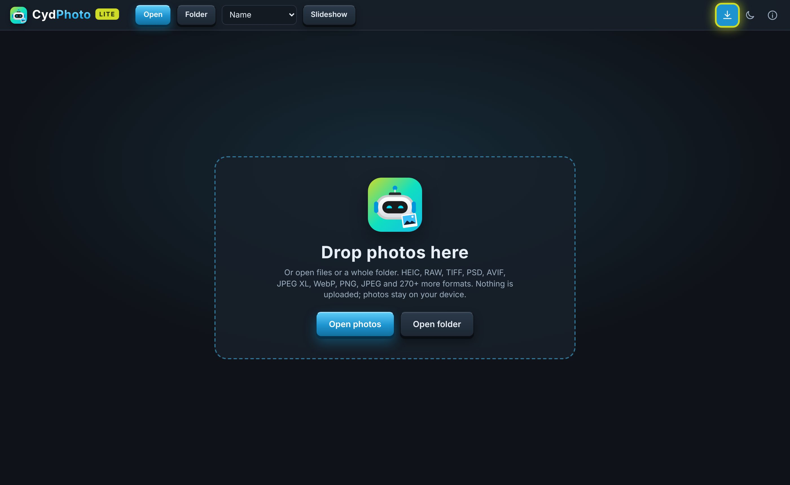
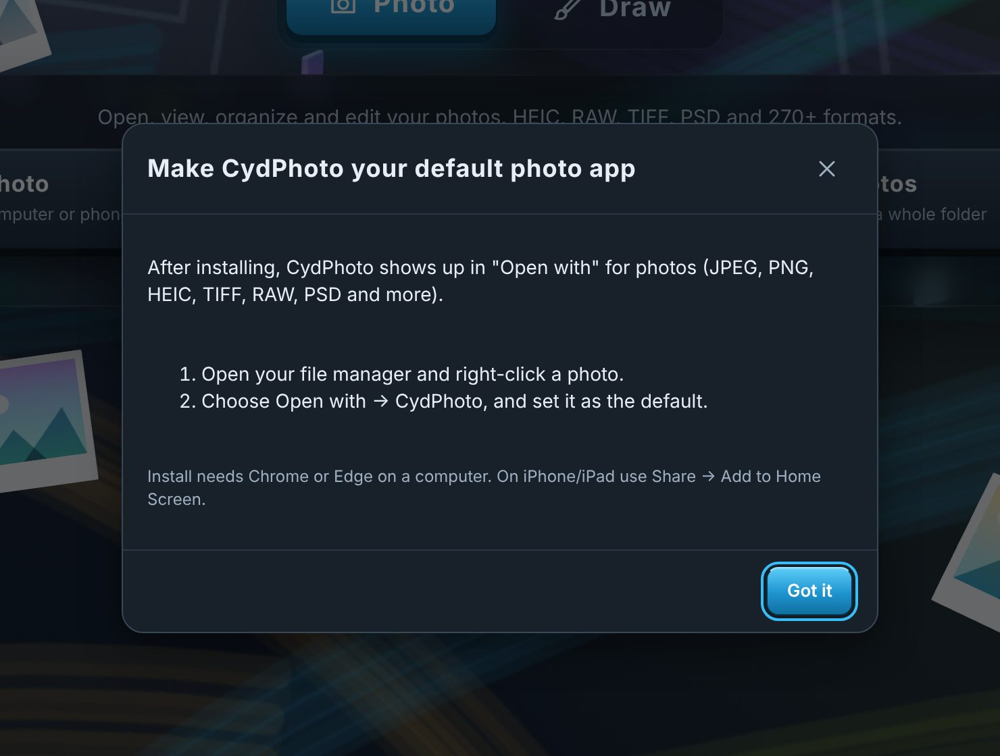

CydPhoto
Full photo editor, paint studio and photo library, with Cydni's intro.
- Photo and Draw workspaces, layers, filters, looks
- Library with albums, favorites, slideshow
- Opens 270+ formats, saves 20+
Two apps, installed separately. Each one can be your default for opening photos: HEIC, JPEG, PNG, TIFF, RAW, PSD and more.
Full photo editor, paint studio and photo library, with Cydni's intro.
Fast viewer only. The best choice for double-click viewing.
Use one of the buttons above on a Windows, Mac, Linux or ChromeOS computer.
It's the download arrow to the left of the moon icon (highlighted below). You can also use the install icon at the right end of the browser's address bar.


The browser shows its own install box. The app then opens in its own window and appears in your Start menu, Dock or Launchpad. Repeat for the other app if you want both.
The first time an installed app opens a file type, the browser asks for permission. Choose Allow and tick "Remember".

A common setup: CydPhoto Lite opens photos on double-click, and CydPhoto sits under "Open with" for editing. iPhone and iPad can add either app to the Home Screen (Safari → Share → Add to Home Screen), but iOS doesn't let web apps become the default photo app. Photos never leave your device.